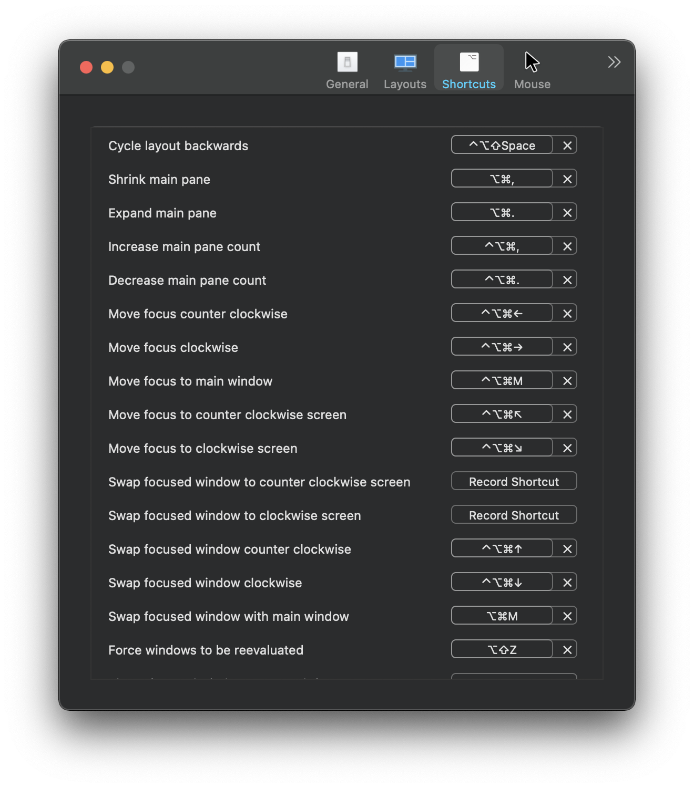

# Tiling Window Management - 平鋪式視窗管理 (Amethyst & Yabai)
# 借鑑 Linux，另一種視窗管理的思路
在 macOS 中，要做視窗管理不是依靠手動拖曳視窗邊角調整大小及位置，就是依靠其他視窗管理工具諸如 Magnet 或是 Moom 這類快速調整視窗的小工具作為輔助。
然而在每次開啟新的視窗的時候通常仍需要自己手動定位是窗的位置及大小，還是不太方便。
另外當視窗一多起來，依然免除不了需要通過手勢「展開」來從茫茫視窗海中找尋所需要視窗的痛苦。
MacOS 本身的視窗管理能力是有目共睹的混亂。

通常視窗一多就會擠在一起，macOS 用戶就必須通過「展開」來從茫茫程式海中找尋
今天要介紹的「平鋪式視窗管理」不同於 macOS 一般預設的視窗管理機制，其特色則是：「 盡可能地將所有視窗依照設定好的規則展開， 並且 避免視窗重疊 在一起。」
如此更能讓人一目瞭然現在桌面上有哪些視窗。
所有視窗都展開來
當開啟新的視窗的時候視窗管理工具就會自動依照規則做好佈局，免除了視窗蓋來蓋去的問題。

通常當視窗只有一個的時候會預設展開到最大，之後以二分法的方式分隔空間
Tiling Window Management 中最為人熟知的就是 Linux 下 i3 的視窗管理了。其自動排列視窗、平鋪視窗的特性讓許多人即使離開了 Linux 也念念不忘。
因此身為 Unix Like 的 MacOS 當然也一定會有人想要移植這樣一套方便的視窗管理工具。
今天就主要介紹兩款網路上比較常見的 Tiling Window Management 套件。
- Amethyst
- Yabai
這兩個套件都是 Open Source 的，因此都可以在 Github 上找到。
其中 Amethyst 是比較簡單容易上手的；而 Yabai 更適合進階使用者使用。
為了簡單講解，接下來都會以 TWM 作為 Tiling Window Management 的縮寫。
# Amethyst
Amethyst 是一個非常容易入門的 TWM， 並且提供了非常多樣的視窗佈局可供選擇。
基本上安裝好 Amethyst 之後我們不需要做其他額外的設定即可開始使用。
Amethyst 擁有非常多樣的快捷鍵可以設定。通過簡單的快捷鍵我們可以很容易地操控各個視窗。

非常適合想要開箱即用的使用者。

利用設定好的快捷鍵，可以很容易地操控佈局中的視窗
但是缺點也很明顯，我列舉了幾個觀察到的缺點如下：
- 沒有辦法客製化自己的佈局
這其實並不是什麼大問題， Amethyst 提供了許許多多的佈局種類，基本上可以滿足絕大多數使用者的需求。然而若是對佈局方式比較有自己想法的人，Amethyst 這部分可能就無法滿足。
- 視窗只能水平縮放、不能垂直縮放
Amethyst 採用「主要視窗」與「次要視窗」的概念。
其中僅有「主要視窗」可以進行水平縮放 (依然無法垂直縮放)

以上面的 gif 為例，右側的 Terminal 就會顯得非常的狹小，其實並不利於使用。
- 能夠使用的功能已經被 Amethyst 定死，僅能使用熱鍵提供綁定的功能，無法另外設定其他功能。
這是所有開箱即用的小工具都一定會有的軟肋。畢竟要讓人簡單上手，一定就是要設定越少越好。這應該算是一種妥協吧～。
# 安裝
Amethyst 的安裝非常簡單，僅需要使用 brew ，一行指令即可。
brew install --cask amethyst
安裝完後，會在 Application Perference 中出現一個 app ，開啟後即可開始使用。
# Yabai
相較於 Amethyst 開箱即用， Yabai 走在另一個極端。
Yabai 僅僅提供了一套完整 TWM 的指令集框架來操控視窗。使用者需要自行撰寫熱鍵設定、功能腳本來達到想要的結果。但也因為如此 Yabai 給予了極高的可設定彈性。
舉個例子，若是想要將視窗延展到最大，Yabai 需要使用以下指令完成。
yabai -m window --toggle zoom-fullscreen
然而若是每次要執行一個動作就必須使用一次指令，這是極度不切實際的。
因此通常使用者會搭配一套叫做 skhd 的快捷鍵管理程式，設定自己的快捷鍵映射到 Yabai 的指令。
還好網路上充斥著各路高手自行設定的 TWM 腳本設定，對於剛接觸的新手而言也大大了降低了入門的難度。
網路上有人說使用 Yabai 需要關閉 MacOS 的 System Integrity Protection 功能，但是其實這只是 Optional 。除非我們需要「更加進階的用法」不然一般的情況下依然可以很良好的使用。
我個人很推薦先從這個 Youtuber 的 Yabai 介紹開始下手，他不僅展示了他自己的 Yabai ，還丟出了自己的設定檔跟設定教學。算是非常完整的簡易入門。
# 安裝
為了良好的 Yabai 體驗，需要安裝 yabai 與 skhd 兩個 cli 套件。
由於我本人並不想關閉 MacOS 的 System Integrity Protection ，因此以下的安裝流程會是以不關閉 MacOS 的 System Integrity Protection 為主。
- 安裝 Yabai
brew install koekeishiya/formulae/yabai
- 安裝 jq （這是一個 Json 的可視化 cli ，讓我們可以在 terminal 中容易的操控 JSON 物件）
brew install jq
- 安裝 skhd (快捷鍵的設定套件)
brew install koekeishiya/formulae/skhd
三個都安裝完之後，你需要設定 .yabairc 以及 .skhdrc 檔案。
其中 .yabairc 是 yabai 的設定檔；而 .skhdrc 則是 skhd 設定快捷鍵的設定檔。
你可以將 .yabairc 與 .skhdrc 放置在家目錄 $HOME 中，或是在 .config 中建立各自的 config folder 都可以。
我自己是將設定檔都 git 包成一包，放在 .config 中，並且使用 ln -s 軟連結到家目錄了。
如果不嫌棄，也可以使用我的設定
// git 下載我的 yabai 設定到 .config/yabai
$ git clone https://github.com/z20240/yabai.git "${HOME}"/.config/yabai
// 軟連結 .config/yabai 中的 yabairc 設定到家目錄
$ ln -s "${HOME}/.config/yabai/yabai/yabairc" "${HOME}/.yabairc"
主要實現功能有以下這些
- 新增的視窗依照目前的關注位置分割

- 使用快捷鍵水平 / 垂直縮放視窗

- 滑鼠拖動即可調整視窗大小

- 滑鼠拖動到視窗的邊側，可置換視窗到其位置

- 滑鼠拖動可以到視窗中央，可以堆疊這兩個視窗

- 快速變換焦點視窗
- 快速對換視窗

- 一鍵放大 / 縮小視窗
- 一鍵將視窗丟到其他工作區

- 一鍵將視窗脫離 TWM，並且在這樣的狀況下依然可以快速排列視窗

- 一鍵將視窗與其他視窗堆疊，以堆疊的形式整理視窗

- 一鍵旋轉目前的佈局樣式

另外，關於 stack 堆疊的效果，我額外使用了 stackline 的小圖示特效。
他可以更好地將目前有堆疊狀態的視窗給顯示出來，有效的降低了忘記視窗存在的狀況。
目前我主要就是使用這些功能，未來如果有想到什麼需要的功能會繼續更新在設定檔中。
# 結語
TWM 的使用體驗是真的優於以往的視窗管理方法。
他更有效率地整理雜亂無章的視窗佈局，大大提高了我們在視窗之間游移速度，並且減少了許多記憶視窗位置的心智負擔。
至於對於到底該使用 Amethyst 或是 Yabai？
我認為這完全是個人喜好問題。
真要給點意見的話，我個人認為從 Amethyst 開始入門是一個不錯的起手式。
畢竟我就是在 Amethyst 玩一段時間後開始發現 Amethyst 的不足並且決定跳槽到 Yabai。
就像是發現了新大陸一般，著實被 Yabai 的強大給折服。
通過 skhd 搭配 Yabai 的設定，我們幾乎可以做到任何想得到的快捷鍵用法設定。剩下的只有「想不想得到」而沒有「做不做得到」的問題了。
# Reference
- Amethyst
- Yabai
- skhd
- Yabai-note
- stackline
- 用于 macOS 平铺式窗口管理器 — yabai